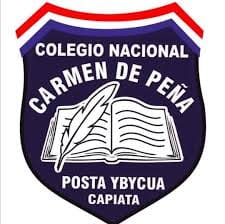

🎯 Misión
Formar jóvenes capaces, responsables y de buenas costumbres, cultivando el intelecto y practicando valores morales para contribuir al bienestar escolar, familiar y social.

Educación, valores y compromiso con la comunidad
COLEGIO NACIONAL
Una institución educativa comprometida con la formación integral de jóvenes y con el desarrollo de la comunidad.
Conocer nuestro colegioEl Colegio Nacional “Carmen de Peña” se encuentra ubicado en el km 19 de la Ruta D027 “Mariscal Francisco Solano López”, en la 6.ª Compañía - Posta Ybycuá, distrito de Capiatá, Departamento Central.
Formar jóvenes capaces, responsables y de buenas costumbres, cultivando el intelecto y practicando valores morales para contribuir al bienestar escolar, familiar y social.
Brindar una educación íntegra basada en principios y valores positivos, preparando a los estudiantes para continuar estudios superiores, incorporarse al ámbito laboral y convertirse en ciudadanos útiles para la sociedad.
Honestidad, dignidad, respeto, cooperación, fe, caridad, esperanza y solidaridad.
Una institución nacida del esfuerzo de la comunidad de Posta Ybycuá, comprometida con la educación, los valores y la formación integral de generaciones de estudiantes.
El Colegio Nacional “Carmen de Peña” se encuentraba ubicado en el antiguo kilómetro 19 de la Ruta D027 “Mariscal Francisco Solano López”, en la 6.ª Compañía, Posta Ybycuá, distrito de Capiatá, Departamento Central. Su historia está estrechamente vinculada con el esfuerzo de los habitantes de la comunidad por brindar a los jóvenes mayores oportunidades de formación académica.
La idea de crear una institución de nivel medio surgió ante la necesidad de que los jóvenes de Posta Ybycuá pudieran continuar sus estudios sin tener que trasladarse a localidades lejanas. En aquella época, las posibilidades educativas de la zona eran limitadas y muchos estudiantes necesitaban realizar grandes esfuerzos para acceder a una educación superior a la primaria.
Uno de los principales impulsores de este proyecto fue el Dr. Cecilio Alejandro Osorio, quien soñaba con establecer un colegio que contribuyera al desarrollo intelectual y humano de los jóvenes de su comunidad. Su propia experiencia educativa le permitió comprender la importancia de acercar la educación a las familias de la zona.
En el año 1976, el Colegio Nacional “Carmen de Peña” fue creado mediante la Ley de Presupuesto General de Gastos de la Nación. Este acontecimiento representó un paso fundamental para la educación de Posta Ybycuá y permitió concretar un proyecto esperado por la comunidad.
El 1 de marzo de 1977, la institución inició oficialmente sus actividades con el primer curso del Ciclo Básico. Su fundador y primer director fue el Dr. Cecilio Alejandro Osorio, quien asumió la responsabilidad de orientar los primeros pasos de la institución y contribuir a su consolidación.
Durante sus primeros ocho años, entre 1977 y 1985, el colegio funcionó en una casa particular, debido a que todavía no disponía de un edificio propio. A pesar de las limitaciones materiales de aquella etapa, las actividades educativas continuaron gracias al compromiso de sus primeros docentes, estudiantes y familias.
La comunidad tuvo una participación fundamental en este proceso. A través de la Comisión Pro-Colegio, los vecinos colaboraron para reunir muebles, útiles y otros elementos necesarios para el funcionamiento de la institución. Este esfuerzo colectivo demuestra que el crecimiento del colegio fue posible gracias a la cooperación entre la institución educativa y los habitantes de la zona.
En el año 1985, el colegio pasó a funcionar en su local propio, donde continúa desarrollando sus actividades actualmente. El traslado constituyó un momento importante en su historia, ya que permitió contar con un espacio destinado específicamente a la enseñanza y al aprendizaje.
El establecimiento de una sede propia representó el resultado de años de esfuerzo y colaboración. A partir de esta nueva etapa, la institución pudo seguir fortaleciendo sus actividades académicas y responder progresivamente a las necesidades educativas de una comunidad en crecimiento.
La institución lleva el nombre de Carmen Molino Torres de Peña, en homenaje a una mujer que tuvo un significado especial en la vida de su fundador. Era esposa del Dr. Pedro P. Peña, recordado por su defensa de los derechos del Paraguay sobre el Chaco Paraguayo.
Según los antecedentes históricos de la institución, Carmen Molino Torres de Peña brindó orientación y apoyo al Dr. Cecilio Alejandro Osorio cuando este era alumno de la escuela “Cháritas de Niños Pobres”. El homenaje refleja la gratitud del fundador hacia quien contribuyó a su formación y a sus oportunidades educativas.
De esta manera, el nombre del colegio representa no solo un reconocimiento personal, sino también un recuerdo de la importancia de la solidaridad, la orientación y el apoyo para que los jóvenes puedan acceder a la educación.
En el año 2004, después de que el Dr. Cecilio Alejandro Osorio se acogiera a los beneficios de la jubilación ordinaria, asumió la dirección el Lic. César Humberto Talavera Ayala, mediante la Resolución N.º 844 del 14 de marzo de 2004.
El Lic. César Humberto Talavera Ayala había sido alumno de la institución y posteriormente formó parte de su comunidad educativa como docente y director. Su trayectoria representa un vínculo significativo con la historia del colegio, ya que conoció la institución desde diferentes etapas de su formación y desarrollo.
Ejerció la dirección hasta el 28 de abril de 2021, fecha de su fallecimiento. Su periodo al frente de la institución constituyó una etapa importante en la continuidad de la gestión educativa y administrativa del colegio.
Entre los años 2021 y 2024, la dirección estuvo a cargo de la Prof. Viviana Maidana Franco. Durante este periodo se produjo una toma del colegio que, según la información proporcionada, culminó con su salida del cargo.
Posteriormente, el 24 de julio de 2024, la Lic. Limpia Concepción Carballo Paredes asumió como Encargada de Despacho, de acuerdo con las Resoluciones N.º 3333/3334. En ese mismo año, la institución quedó vinculada al Área de Supervisión de Apoyo Técnico Pedagógico 11-34 del Departamento Central, conforme a la Resolución N.º 994/24.
En el año 2026, la dirección de la institución se encuentra a cargo de la Prof. Dra. Sonia Elizabeth Flores de Argüello, según la información institucional proporcionada.
A lo largo de su trayectoria, el Colegio Nacional “Carmen de Peña” ha ampliado su oferta educativa para responder a las necesidades de los estudiantes. Actualmente ofrece el tercer ciclo de la Educación Escolar Básica, con séptimo, octavo y noveno grados, y Educación Media mediante distintas modalidades de Bachillerato Científico y Técnico.
Dentro del Bachillerato Científico se incluyen los énfasis en Ciencias Básicas, Ciencias Sociales y Letras y Artes. Asimismo, la institución ofrece Bachilleratos Técnicos en Informática y Contabilidad, que permiten a los estudiantes desarrollar conocimientos y habilidades para continuar sus estudios o prepararse para el mundo laboral.
En 2026, el colegio cuenta con 86 docentes catedráticos, 10 funcionarios técnicos y administrativos y 3 personales de servicio, quienes contribuyen al funcionamiento diario de la institución y al acompañamiento de la comunidad educativa.
Entre los servicios y recursos destinados a los estudiantes se encuentran el desayuno, el almuerzo y la merienda escolar, brindados mediante el Grupo Comepar y el Ministerio de Desarrollo Social, además de mobiliarios proporcionados por Itaipú en el marco del convenio correspondiente con el Ministerio de Educación y Ciencias.
La misión del Colegio Nacional “Carmen de Peña” consiste en formar jóvenes capaces, responsables y de buenas costumbres, cultivando el intelecto y practicando valores morales que contribuyan al bienestar escolar, familiar y social.
Su visión es brindar una educación integral basada en principios y valores positivos, preparando a los estudiantes para continuar estudios superiores, incorporarse al ámbito laboral y convertirse en ciudadanos útiles para sí mismos, sus familias y la sociedad.
La institución promueve valores humanos como la honestidad, la dignidad, el respeto y la cooperación, así como valores cristianos como la fe, la caridad, la esperanza y la solidaridad. Estos principios buscan acompañar la formación académica y personal de los estudiantes.
Con 49 años de servicio cumplidos en 2026 y acercándose a su aniversario número 50 en 2027, el Colegio Nacional “Carmen de Peña” continúa desempeñando un papel importante en la comunidad de Posta Ybycuá. Su historia es el resultado del esfuerzo de sus fundadores, directivos, docentes, funcionarios, estudiantes, familias y vecinos, que han contribuido a sostener el compromiso con una educación de calidad y la formación integral de nuevas generaciones.
Los acontecimientos más importantes en la historia del Colegio Nacional “Carmen de Peña”, desde su creación hasta la actualidad.
El Colegio Nacional “Carmen de Peña” es creado mediante la Ley de Presupuesto General de Gastos de la Nación, dando respuesta a la necesidad educativa de la comunidad de Posta Ybycuá.
La institución inicia oficialmente sus actividades con el primer curso del Ciclo Básico. El Dr. Cecilio Alejandro Osorio asume como fundador y primer director.
Durante sus primeros ocho años, el colegio funciona en una vivienda particular. La Comisión Pro-Colegio y los vecinos colaboran para reunir muebles, útiles y otros recursos necesarios para las clases.
La institución pasa a funcionar en su local propio, donde continúa desarrollando sus actividades educativas. Este traslado marca una etapa importante en su crecimiento.
Tras la jubilación ordinaria del Dr. Cecilio Alejandro Osorio, asume la dirección el Lic. César Humberto Talavera Ayala, mediante la Resolución N.º 844 del 14 de marzo de 2004.
Fallece el Lic. César Humberto Talavera Ayala, quien había ejercido la dirección de la institución desde el año 2004.
La Prof. Viviana Franco se encuentra al frente de la institución durante este periodo. Posteriormente, una toma del colegio culmina con su salida del cargo, según la información proporcionada.
La Lic. Limpia Concepción Carballo Paredes asume como Encargada de Despacho, conforme a las Resoluciones N.º 3333/3334.
La institución queda bajo el Área de Supervisión de Apoyo Técnico Pedagógico 11-34 del Departamento Central, conforme a la Resolución N.º 994/24.
La Prof. Dra. Sonia Elizabeth Flores de Argüello se encuentra a cargo de la dirección, actualmente
La institución ofrece Educación Escolar Básica, Educación Media y formación técnica.
Tercer Ciclo de la Educación Escolar Básica.
Ciencias Básicas, Ciencias Sociales y Letras y Artes.
Bachillerato Técnico en Informática y Bachillerato Técnico en Contabilidad.
El himno representa parte de la identidad y la historia de nuestra institución educativa.
Al colegio querido cantemos
Carmen Torres de Peña ¡Salud!
Y en gesto de amor y cariño
Aclamemos su eterna virtud.
Carmen Torres de Peña hoy vive
De albergue brillante al honor
Y en él estudiantes insignes van
Llenando sus alforjas de amor.
Posta Ybycuá cuna del colegio
Que va modelando alma juvenil...
A ti te cantamos con dulce arpegio
Y a Carmen de Peña un salmo feliz.
Laureado colegio el nuestro, donde
Acuden, con honra y tesón, profesores
Y alumnos urgiendo a la patria
Señero pendón.
Terminó la oscura ignorancia y la noche
Que fue inquietud, y en sus huellas
Brillante aflora, Carmen Torres de Peña
La luz.
Posta Ybycuá cuna del colegio
Que va modelando alma juvenil...
A ti te cantamos con dulce arpegio
Y a Carmen de Peña un salmo feliz.
Letra: Dr. Cecilio Alejandro Osorio
Música: Prof. Alcides Riquelme
El Colegio Nacional “Carmen de Peña” se ha destacado por la participación de sus estudiantes en actividades académicas, deportivas, ambientales y comunitarias.
El Colegio Nacional “Carmen de Peña” obtuvo el segundo lugar en las Olimpiadas del Saber Olímpico de Capiatá.
La institución alcanzó el segundo lugar a nivel nacional en el concurso “SET de Preguntas”, organizado por la Subsecretaría de Estado de Tributación.
Los estudiantes llegaron hasta la etapa final y recibieron reconocimientos y premios junto con la institución.
La institución participa en los Juegos Escolares y Estudiantiles Nacionales (JEEN), representando al colegio en diferentes disciplinas deportivas.
Entre las disciplinas se encuentran futsal, handball, básquetbol, vóley, natación, ajedrez y atletismo.
En el año 2023, el colegio participó en las finales distritales de los Juegos Escolares y Estudiantiles Nacionales.
La institución también fue sede de las finales distritales y contó con equipos participantes en las finales de futsal y handball en diferentes categorías.
El estudiante Santiago Daniel Paniagua González recibió un reconocimiento de autoridades municipales junto a otros jóvenes de Capiatá por sus logros deportivos en un torneo internacional realizado en Japón.
En 2023, la institución participó en “Capiatá Verde”, iniciativa en la que participaron instituciones educativas del distrito. El colegio se destacó por ganar el proyecto Capiatá Verde durante tres años consecutivos, de 2023 a 2025 en deferentes puesuestos una vez en 3er puesto y dos veces en 2do puesto. Actualmente, en el año 2026, los estudiantes del 3.er curso del Bachillerato Técnico en Informática (BTI) se encuentran participando nuevamente en el proyecto.
La actividad estuvo relacionada con la reforestación, el cuidado del ambiente y la promoción de plantas nativas.
El Prof. Lic. César Humberto Talavera Ayala fue alumno, docente y posteriormente director general del Colegio Nacional “Carmen de Peña”.
Ejerció la dirección durante 17 años y dejó una importante trayectoria vinculada a la institución y a la comunidad educativa.
La comunidad educativa participa en actividades académicas, deportivas, culturales, ambientales y comunitarias, promoviendo el desarrollo integral de los estudiantes y la representación del colegio.
Prof. Dra. Sonia Elizabeth Flores de Argüello
Sr. Froilán Talavera Ayala
Prof. Dra. Sonia Elizabeth Flores de Argüello
Prof. Amada Romero de Sánchez
COORDINADOR GENERAL: Lic Fabián Giménez
Lic. Jorge Guerrero
Lic. Alicia Chávez
Dr. Rubén Fernández
Lic. Alba Lisandra Peña Adorno
Prof. Ronal Roberto González Leguizamón
86 docentes catedráticos,
10 funcionarios técnicos y administrativos
y 3 personales de servicio.
Conocé diferentes momentos, actividades e instalaciones del Colegio Nacional Carmen de Peña.
Todavía no hay fotografías disponibles.
La documentación institucional señala que el colegio cuenta con más de 1.430 alumnos distribuidos en 39 secciones.
Cuenta con aulas, biblioteca, salas de computación, salas de deportes, baños y otros espacios destinados a la comunidad educativa.
La documentación señala que la institución recibió desayuno, almuerzo y merienda escolar mediante los programas correspondientes.
También recibió mobiliarios de ITAIPÚ en el marco de un convenio con el Ministerio de Educación y Ciencias.
Km 22 de la Ruta D027 “Mariscal Francisco Solano López”, 6.ª Compañía - Posta Ybycuá, Capiatá, Departamento Central.
📍 Ver ubicación en Google Mapscncp30@hotmail.com